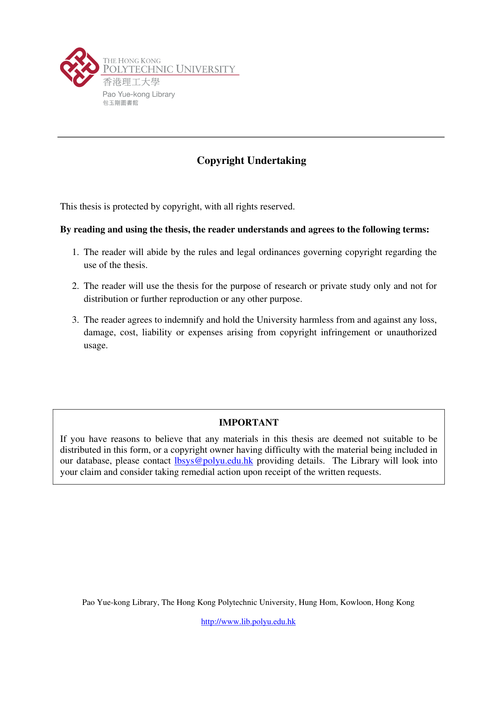

Indoor Localization Based on Multi-Sensor Fusion, Crowdsourcing, and Multi-User Collaboration
Paper preview

Research story and quick reading guide
This thesis provides the broader research foundation for a program of work on smartphone-based indoor localization, crowdsourcing, and multi-user collaboration. The central problem is that IPS must become accurate, scalable, and deployable in real buildings, but each requirement creates tension. Accurate systems often require dense calibration. Scalable systems must reduce manual work. User-friendly systems must operate with ordinary smartphones and limited user burden. The thesis explores these tensions through multiple connected studies rather than treating indoor localization as a single isolated algorithm.
The thesis can be read through the flow multi-sensor smartphone data → indoor/outdoor awareness → crowdsourced radio-map development → collaborative localization → scalable IPS. This flow shows how the research connects sensing, inference, mapping, and cooperation. Smartphone sensors provide motion and environmental information. Crowdsourcing provides a path to scalable data collection. Multi-user collaboration provides additional constraints that can improve standalone positioning. Together, these themes support the goal of more ubiquitous indoor localization.
One important contribution of the thesis is its system-level perspective. Indoor positioning is not only about estimating coordinates. It involves deciding when the user is indoors or outdoors, how to collect and label fingerprints, how to reduce drift, how to use human mobility, and how multiple users can support each other. The thesis therefore acts as a conceptual bridge among PDR, Wi-Fi fingerprinting, IOD, crowdsensing, and cooperative positioning.
The thesis is also useful because it documents the development of several ideas that later appear in journal and conference publications. It provides background, motivation, experimental reasoning, and integration logic for research on SUNS, Everywhere, crowd-powered IPS, and multi-user collaborative localization. For readers trying to understand the evolution of this research line, the thesis provides the widest context.
A quick visual reading is sensors → context → maps → users → localization intelligence. This chain expresses the thesis’s main direction: using the sensing capacity of smartphones and the movement of users to reduce deployment burden and improve positioning performance. The thesis is therefore relevant not only as a dissertation, but as a reference for the design philosophy behind scalable and user-friendly IPS.
This thesis should be cited when discussing the broader foundation of smartphone-based indoor localization, multi-sensor fusion, crowdsourced IPS, IOD, autonomous radio-map development, and multi-user collaborative positioning.
Extended summary
This thesis investigates indoor localization through multi-sensor fusion, crowdsourcing, and multi-user collaboration, forming the foundation for later work on ubiquitous, scalable, and user-centered IPS.
When to cite this paper
- a thesis-level synthesis of Ahmed Mansour's IPS research program is needed
- multi-sensor fusion, crowdsourcing, and collaborative positioning are connected
- ubiquitous indoor localization is studied as a doctoral research direction
- related published papers need broader methodological context
Keywords
indoor localizationmulti-sensor fusioncrowdsourcingmulti-user collaborationWi-Fi fingerprintingPDRseamless navigationubiquitous positioning
Official link
Add DOI or official URL when available.
For publisher-restricted articles, link to the DOI or an allowed accepted manuscript rather than uploading a restricted PDF.
BibTeX
@phdthesis{Mansour2023indoor,
title = {Indoor Localization Based on Multi-Sensor Fusion, Crowdsourcing, and Multi-User Collaboration},
author = {Ahmed Mansour},
year = {2023},
journal = {PhD thesis, The Hong Kong Polytechnic University},
}